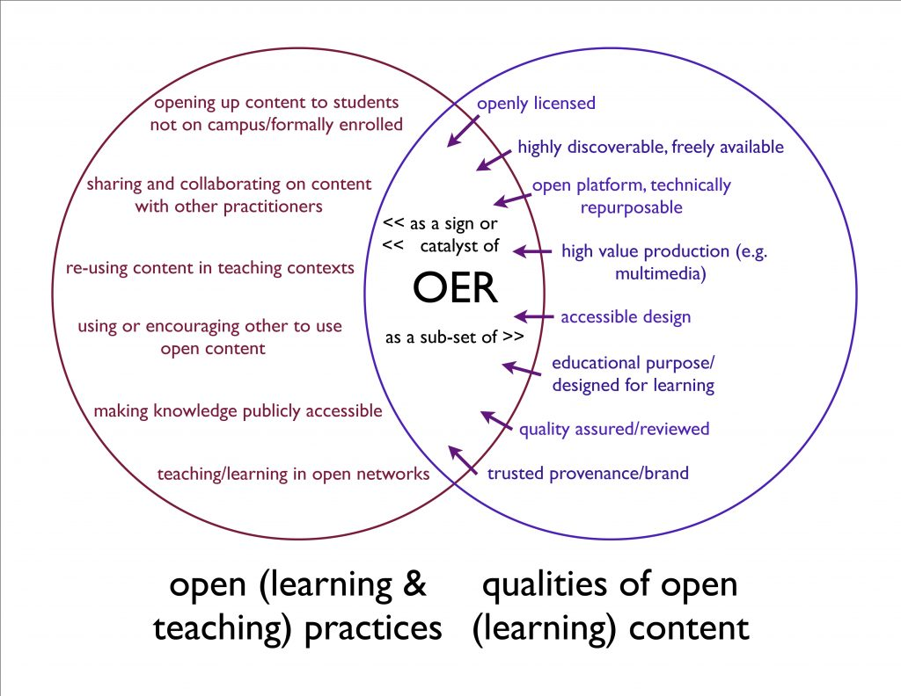

1 of 9
What are ‘open educational practices’?
4th June 2019

The International Council for Open and Distance Education defines open educational practices, quite simply, as ‘practices which support the production, use and reuse of high quality open educational resources (OER)’. However, this implies a narrow view of educational practice which centres on the production of content. A broader definition would encompass all activities that open up access to educational opportunity, in a context where freely available online content and services (whether ‘open’, ‘educational’ or not) are taken as the norm. The JISC case studies in open education demonstrate something of range: four very different institutions that are taking distinctive approaches to open education at a strategic level.
The Capetown Open Education Declaration, a founding text of the OER movement, concurs with this broader approach:
‘open education is not limited to just open educational resources. It also draws upon open technologies that facilitate collaborative, flexible learning and the open sharing of teaching practices that empower educators to benefit from the best ideas of their colleagues. It may also grow to include new approaches to assessment, accreditation and collaborative learning’. (Cape Town Open Education Declaration, 2008)
Open educational practices, in light of JISC’s case studies and the Capetown declaration, seem to encompass all of the following.
| Practice | Examples |
|---|---|
| Production, management, use and reuse of open educational resources | Openly licensing recorded lectures and associated materials, and making them publicly available via the institution’s web site (e.g. OpenSpires) Collating and managing openly licensed materials relevant to a particular subject area in an open repository (e.g. HumBox) |
| Developing and applying open/public pedagogies in teaching practice | Facilitating/participating in massively online open courses (see for example the Connectivism MOOC) Designing courses that require students to contribute to public knowledge resources (e.g. wikipedia, web sites) alongside teachers, academics, and the public |
| Open learning and gaining access to open learning opportunities | Learners accessing freely available online content (e.g. through sites such as the OER Commons, though more usually through standard internet searches) Learners enrolling on free open/distance learning courses, either as ‘tasters’ for paid courses (e.g. OpenLearn) or on a peer to peer model (e.g. P2PU) Learners collaborating on open knowledge-building projects (e.g. wikis, web sites) Learners sharing outcomes with one another (e.g. essay sharing sites) Open accreditation or certification is an emerging aspect of open learning (see e.g. the OERU) |
| Practising open scholarship, to encompass open access publication, open science and open research (See Weller, Martin (2011). The Digital Scholar: How Technology Is Transforming Scholarly Practice) | Making research data available in an open institutional repository, perhaps supported by apps to enable learning/teaching use (see e.g. City University’s Open Access Repository and the University of Southampton Open Data service) Publishing research findings in an open peer-reviewed journal (see e.g. the OpenScience directory) or repository |
| Open sharing of teaching ideas and know-how | Contributing to an open wiki or database of expertise in the use of specific learning technologies (see for example Cloudworks) Sharing examples of teaching practice in an open subject community or repository (for example created using EdShare open source software) |
| Using open technologies (web-based platforms, applications and services) in an educational context | Using freely available third party software or web 2.0 services to support learning activities, ensuring all learners have equal access Building open environments for collaboration using cloud services such as social bookmarking and media sharing sites. |
This briefing paper is written from the perspective of the UK open educational resources (OER) programme. We are not experts in these other aspects of open practice. However, we are interested to know how the use and re-use of OERs is related to openness in other areas of educational activity, both personal and institutional. Does a general embrace of open educational practices make individuals and/or institutions more likely to engage with OER? Does OER activity make other kinds of open practice more attractive or achievable? And does a more general engagement in open practice lead to greater benefits than a focus on OERs alone? This latter question is particularly important when it comes to developing benefit models for engagement in OER.
To support this investigation, we have visualised OERs as the conjunction of open contentpractices with open educational practices more broadly. In relation to open content, it is interesting to ask what is special about educational content and how it is made openly available, licensed and distributed or shared. In relation to open practices, it is interesting to ask how practices around content contribute to or are supported by other open practices across the sphere of educational activity.
